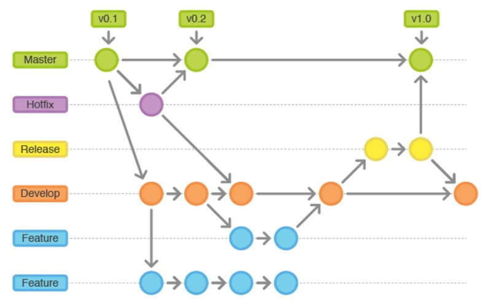
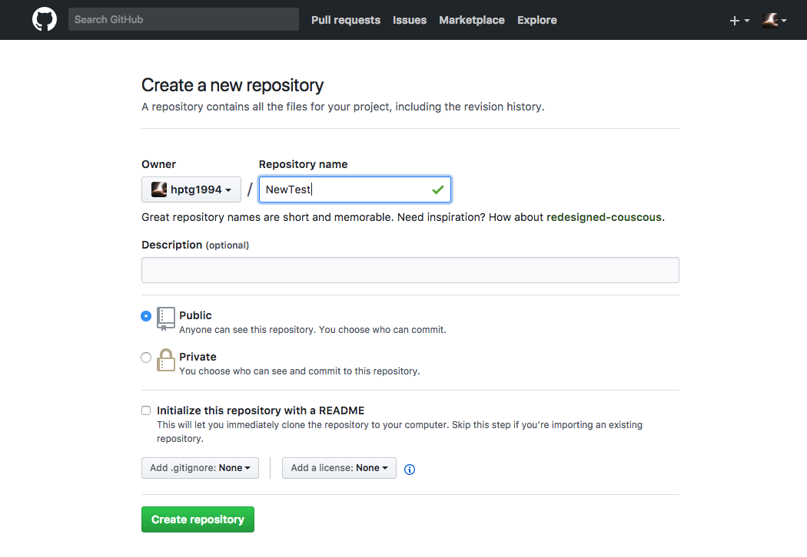

How To Collaborate on Github with Multi-Users

So now we start a new project on Github:

and now clone it to the local storagegit clone git@github.com:hptg1994/NewTest.git
So now every body comes in and start working on this project(Assume the master branch named master)
1) if someone needs to develop a new function, he/she need to make a dev branch from the master:git checkout -b hptg1994/development
so a new branch create and call hptg1994/development
2) if the master brach encounters a heavy bug and need to be repaired immediately, someone create a new branch and do it:
1 | git checkout master |
3) now another developer have finished the new component and ready to publish it:(Assume now the working branch is hptg1994/development)
First : Always checking if any changes on master branch,even it is
already up-to-dates( who knows :) )git pull origin master hptg1994/development
pull from (mater) to (hptg1994/development)After change the stuff, add, commit, push on your own branch(dont push on the master branch!!!)
1
2
3git add .
git commit -m "what have been change"
git push origin hptg1994/developmentAs you may think it is good to merge onto the master branch, go to remote repositories page and do the pull request!
Updating